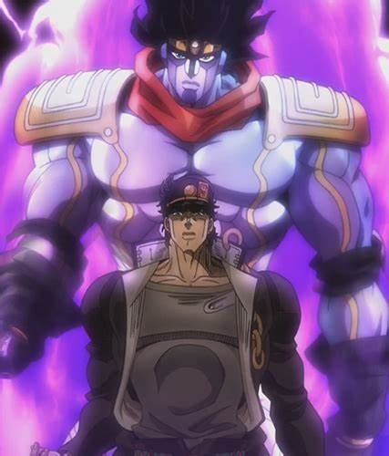

This strong, exerting figure is Jotaro Kujo, or Jotaro, with his Stand - Star Platinum. Star Platinum has the abilities of extreme speed and precision, similar to that of DIO's Stand (Za Warudo), except Za Warudo is slightly more capapble in these attributes. Star Platinum also holds the ability to stop time; however, Jotaro does not realize this in battle until he realizes that his and DIO's Stand are very closely related in that DIO's head is actually attached to the body of Jonathan Joestar (Jotaro's great great grandfather) and thus DIO is not possessing his own personal Stand from his body's life force, but rather Jonathan Joestar's Stand and life force eminating from his body. 
Here are Star Platinum's known abilities and capabilities.
Image credit: bingimages, search: Star Platinum
Click here to return to the main page.
Click here to view information on DIO and his Stand.